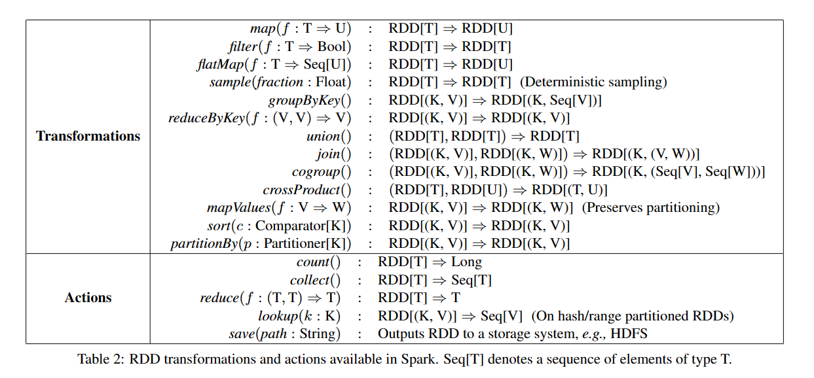

论文笔记
Resilient Distributed Datasets: A Fault-Tolerant Abstraction for In-Memory Cluster Computing(by UCB)
摘要:
RDDs来源于两种当前的数据流系统不能有效处理的应用：迭代式算法，以及交互式数据挖掘工具。在这两种方式中将数据保存在内存中都可以将速度提升一个数量级。
为了提高容错性，RDDs提供了高度限制的形式，他们是只读的数据集并且只能被其他的RDDs操作构建。
介绍:
MR中使用有向无环图来确定工作流程，但是这样还不够。比如在复用工作数据在多并行的操作中。
RDDs
RDD抽象
一个 RDD 是一个只读, 被分区的数据集.我们可以通过两种对稳定的存储系统和其他的 RDDs 进行操作而创建一个新的 RDDs.为了区别开 RDDs 的其他操作, 我们称这些操作为 transformations, 比如 map, filter 以及 join 等都是 transformations 操作.
编程接口
RDDs被表达为对象，transformation被触发使用这些对象上的方法。 当定义了一个或多个RDDs后，用户可以在actions中使用它们，这些操作要么为应用程序返回数据，要么将数据导出到存储系统中。常见的action操作:count,collect,save. 请注意这些action都是懒操作，以允许运行时在构建RDD时进行转换。 用户可以控制RDDs的另外两个方面，caching和partitioning. 快照会将RDD暂存到内存中方便之后复用，如果内存不够用也会落盘。 自定义分区会将多个RDD以相同方式映射，可以方便之后的合并。
示例:控制台日志挖掘
考虑从TB级别日志数据中寻找错误信息。
lines = spark.textFile("hdfs://...")
errors = lines.filter(_.startsWith("ERROR"))
errors.cache()
这时集群上还没有执行任何工作。但是如果我们使用action errors.count() Spark就会将分区中的errors信息cache进内存中。但是请注意lines并不会产生快照，这也是我们所希望的。 Spark调度器会将transformation流水线到有cache的节点上去计算。如果某一份errors丢失，Spark只需要用filter在对应的lines的分区上重建即可。
Spark编程接口
Spark使用Scala实现由于其简洁和效率（静态类型）。 为了使用Spark，开发者编写driver程序连接到集群上去运行worker,driver定义了一个或多个RDDs并且激活他们上的action.workers是长期生存的进程，能够将RDD分区映射到RAM中，就像JAVA对象一样。

注意map是一个一对一映射，flatMap是一对多（就像MR中的map一样）。用户还可以要求一个RDD进行cached，进一步的用户可以得到一个RDD的划分顺序，由Partitioner类表达，并且将其他的RDD也根据此进行划分。 想groupBuKey,reduceByKey,以及sort自动的导致hash或者区间划分的RDD.
实例应用
Spark可以表达不同的现有的集群模型：MapReduce,Pregel,HaLoop. 1. 迭代机器学习 考虑一个梯度下降的算法，从任意的w开始，每一次迭代，他就计算w在数据中的函数的和然后移动w到能提高他的方向上。
val points = spark.textFile(...)
.map(parsePoint).cache()
var w = // random initial vector
for (i <- 1 to ITERATIONS) {
val gradient = points.map{ p =>
p.x * (1/(1+exp(-p.y*(w dot p.x)))-1)*p.y
}.reduce((a,b) => a+b)
w -= gradient
}
- 使用RDDs的MR
data.flatMap(myMap)
.reduceByKey(myCombiner)
.map((k, v) => myReduce(k, v))
用Spark改写MapReduce是十分简单的。
- 使用RDDs的Pregel,Haloop,略
RDD表示和任务调度
每一个RDD有一套划分，这些划分是数据集的部分，一套对父RDD的依赖，以及一个从父RDD计算的函数，以及包括划分方案和数据存放的元数据。 RDD应该区分宽依赖和窄依赖，宽依赖是多对一，窄依赖可以近似理解为一对一。窄依赖容易恢复，宽依赖难恢复。 涉及的转换函数的通用接口大部分少于20行代码
RDD的实现范例
HDFS files: 输入全部来自于HDFS文件，对于这些RDD，partitions对于每一块文件返回一个划分，这些划分的偏移量存放在每一个划分对象中；返回preferredLocation提供了块文件所在的节点，以及iterator用来读块文件。 1. map:在任何RDD上调用map会返回MappedRDD对象，这个对象的partition和preferredLocation等同于他的父亲，但是在iterator方法上应用了传递给parent records的map 2. union:在两个RDD上调用union会返回一个RDD，划分是父RDD的合并，子划分是窄依赖的。注意不会去重 3. sample:取样类似于mapping,除了除了RDD存储了随机种子对于parent records的每一个划分样本。 4. join:加入两个RDDs可能导致不同的依赖情况，取决于他们是否有相同的partitionor
Spark任务调度
 调度器的接口是一个叫runJob的函数，他使用一个RDD参数去工作，一套感兴趣的partitions，以及一个在这些划分上运行的函数。这个接口对于表达Spark中的所有action是足够的(count,collect,save...)
调度器检查目标RDD的lineage关系图来构建stages的DAG去执行。每一个stage包含了尽可能多的使用窄依赖的流水线transformation.stages的边界是要求宽依赖的shuffle操作或者任意缓存的partitions可能短路父RDD的计算.我们从每一个它的parents完成的阶段开始计算确实的partitions工作。
调度器将工作放在数据本地以最小化通信成本。如果一个任务需要处理缓存的划分，我们就把它发送到有哪个划分的节点。否则，如果一个task处理的划分是RDD提供首选位置的，我们就把任务发送过去。
对于宽依赖，我们立即实现中间记录在那些有着parent partition的记录上，以简化容错恢复，很像MapReduce实现map输出一样.
如果一个任务失败了，我们就在其他节点上运行，只要父节点仍然是可用的。如果一些stages变的不可用，我们就重新提交任务去计算失去的这些stages的划分。
最终，lookup action，使得用户从hash或者range partition中获取元素通过它的key,提出了一个有趣的设计问题.
调度器的接口是一个叫runJob的函数，他使用一个RDD参数去工作，一套感兴趣的partitions，以及一个在这些划分上运行的函数。这个接口对于表达Spark中的所有action是足够的(count,collect,save...)
调度器检查目标RDD的lineage关系图来构建stages的DAG去执行。每一个stage包含了尽可能多的使用窄依赖的流水线transformation.stages的边界是要求宽依赖的shuffle操作或者任意缓存的partitions可能短路父RDD的计算.我们从每一个它的parents完成的阶段开始计算确实的partitions工作。
调度器将工作放在数据本地以最小化通信成本。如果一个任务需要处理缓存的划分，我们就把它发送到有哪个划分的节点。否则，如果一个task处理的划分是RDD提供首选位置的，我们就把任务发送过去。
对于宽依赖，我们立即实现中间记录在那些有着parent partition的记录上，以简化容错恢复，很像MapReduce实现map输出一样.
如果一个任务失败了，我们就在其他节点上运行，只要父节点仍然是可用的。如果一些stages变的不可用，我们就重新提交任务去计算失去的这些stages的划分。
最终，lookup action，使得用户从hash或者range partition中获取元素通过它的key,提出了一个有趣的设计问题.
Checkpointing
在长依赖关系中，采用checkpoingting可能更好。 Spark当前实现了chkp的API但是将选择权留给了用户。 主义chkp可以在后台工作，并不会产生一致性问题的开销（eg,cow schemes,分布式快照，或者程序暂停）
实现
用Scala在大约10000行实现，系统可以使用任意的Hadoop资源来当作输入（eg hdfs）,使得很容易集成进入Hadoop环境中。 论文中讨论了三个有趣的实现:Scala解释器，用于交互式使用Spark,缓存管理，以及调试工具。
Spark运行流程
 构建Spark Application的运行环境，启动SparkContext
1. SparkContext向资源管理器（可以是Standalone，Mesos，Yarn）申请运行Executor资源，并启动StandaloneExecutorbackend，
2. Executor向SparkContext申请Task
3. SparkContext将应用程序分发给Executor
4. SparkContext构建成DAG图，将DAG图分解成Stage、将Taskset发送给Task Scheduler，最后由Task Scheduler将Task发送给Executor运行
5. Task在Executor上运行，运行完释放所有资源
构建Spark Application的运行环境，启动SparkContext
1. SparkContext向资源管理器（可以是Standalone，Mesos，Yarn）申请运行Executor资源，并启动StandaloneExecutorbackend，
2. Executor向SparkContext申请Task
3. SparkContext将应用程序分发给Executor
4. SparkContext构建成DAG图，将DAG图分解成Stage、将Taskset发送给Task Scheduler，最后由Task Scheduler将Task发送给Executor运行
5. Task在Executor上运行，运行完释放所有资源
Spark运行特点：
每个Application获取专属的executor进程，该进程在Application期间一直驻留，并以多线程方式运行Task。这种Application隔离机制是有优势的，无论是从调度角度看（每个Driver调度他自己的任务），还是从运行角度看（来自不同Application的Task运行在不同JVM中），当然这样意味着Spark Application不能跨应用程序共享数据，除非将数据写入外部存储系统 Spark与资源管理器无关，只要能够获取executor进程，并能保持相互通信就可以了 提交SparkContext的Client应该靠近Worker节点（运行Executor的节点），最好是在同一个Rack里，因为Spark Application运行过程中SparkContext和Executor之间有大量的信息交换 Task采用了数据本地性和推测执行的优化机制
Spark架构介绍 https://www.cnblogs.com/tgzhu/p/5818374.html Spark示例 https://www.cnblogs.com/qingyunzong/p/8888080.html
Spark运行模式
- standalone:独立集群运行模式
- Yarn-client,SparkContext/DAGschdular位于Client上
- Yarn-cluster,SparkContext/DAGschdular位于第一个启动的Container上
- 区别：YARN-Cluster模式下，Driver运行在AM(Application Master)中，它负责向YARN申请资源，并监督作业的运行状况。当用户提交了作业之后，就可以关掉Client，作业会继续在YARN上运行，因而YARN-Cluster模式不适合运行交互类型的作业 YARN-Client模式下，Application Master仅仅向YARN请求Executor，Client会和请求的Container通信来调度他们工作，也就是说Client不能离开
RDD运行流程
RDD在Spark中运行大概分为以下三步： 1. 创建RDD对象 2. DAGScheduler模块介入运算，计算RDD之间的依赖关系，RDD之间的依赖关系就形成了DAG 3. 每一个Job被分为多个Stage。划分Stage的一个主要依据是当前计算因子的输入是否是确定的，如果是则将其分在同一个Stage，避免多个Stage之间的消息传递开销

- 创建 RDD 上面的例子除去最后一个 collect 是个动作，不会创建 RDD 之外，前面四个转换都会创建出新的 RDD 。因此第一步就是创建好所有 RDD( 内部的五项信息 )？
-
创建执行计划 Spark 会尽可能地管道化，并基于是否要重新组织数据来划分 阶段 (stage) ，例如本例中的 groupBy() 转换就会将整个执行计划划分成两阶段执行。最终会产生一个 DAG(directed acyclic graph ，有向无环图 ) 作为逻辑执行计划
-
调度任务 将各阶段划分成不同的 任务 (task) ，每个任务都是数据和计算的合体。在进行下一阶段前，当前阶段的所有任务都要执行完成。因为下一阶段的第一个转换一定是重新组织数据的，所以必须等当前阶段所有结果数据都计算出来了才能继续
Spark内存管理
Spark 作为一个以擅长内存计算为优势的计算引擎，内存管理方案是其非常重要的模块； Spark的内存可以大体归为两类：execution和storage，前者包括shuffles、joins、sorts和aggregations所需内存，后者包括cache和节点间数据传输所需内存；在Spark 1.5和之前版本里，两者是静态配置的，不支持借用，spark1.6 对内存管理模块进行了优化，通过内存空间的融合，消除以上限制，提供更好的性能。官方网站只是要求内存在8GB之上即可（Impala推荐要求机器配置在128GB）， 但spark job运行效率主要取决于：数据量大小，内存消耗，内核数（确定并发运行的task数量）